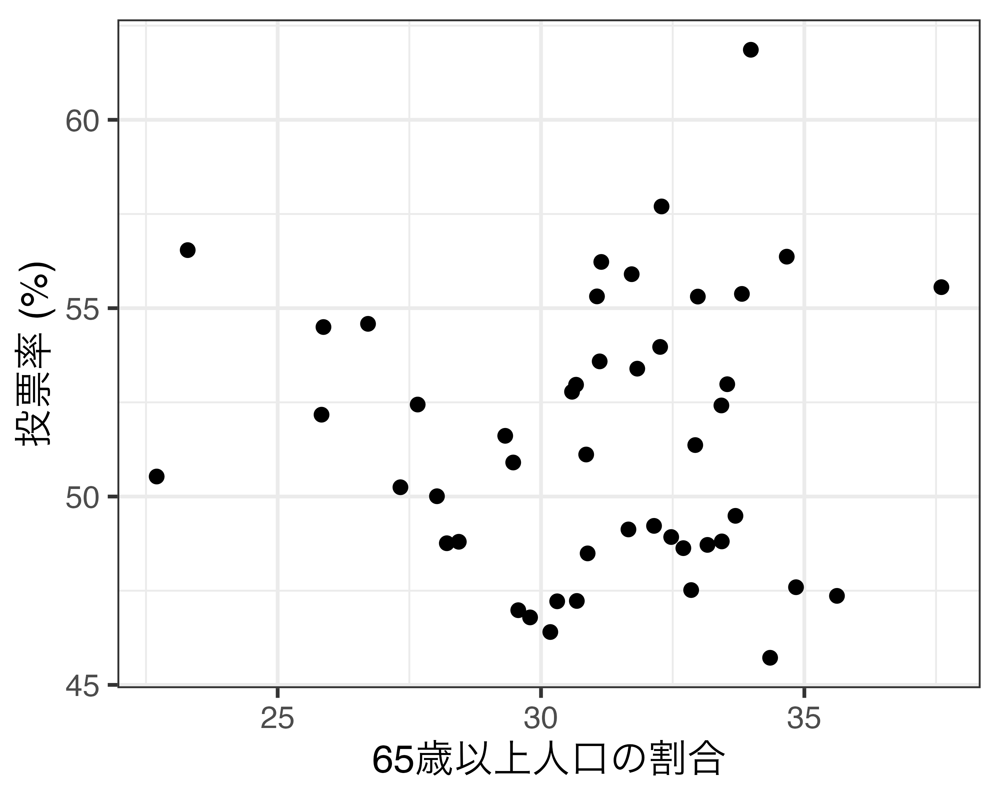

| ID | 都道府県 | 自民得票率 | 財政力指数 | 高齢者比 | 第一次産業従事者比率 |
|---|---|---|---|---|---|
| 1 | 北海道 | 32.820 | 0.435 | 29.190 | 6.995 |
| 2 | 青森県 | 40.440 | 0.341 | 30.214 | 12.029 |
| 3 | 岩手県 | 34.900 | 0.352 | 30.489 | 10.644 |
| 4 | 宮城県 | 36.680 | 0.614 | 25.860 | 4.362 |
| 5 | 秋田県 | 43.460 | 0.309 | 33.942 | 9.621 |
| 6 | 山形県 | 42.490 | 0.351 | 30.901 | 9.194 |
| 7 | 福島県 | 33.820 | 0.533 | 28.779 | 6.483 |
| 8 | 茨城県 | 40.640 | 0.637 | 27.103 | 5.640 |
| 9 | 栃木県 | 38.780 | 0.640 | 26.342 | 5.516 |
| 10 | 群馬県 | 42.060 | 0.625 | 28.081 | 4.963 |
| 11 | 埼玉県 | 32.300 | 0.766 | 25.177 | 1.592 |
| 12 | 千葉県 | 37.790 | 0.778 | 26.166 | 2.786 |
| 13 | 東京都 | 34.370 | 1.101 | 23.171 | 0.387 |
| 14 | 神奈川県 | 34.920 | 0.908 | 24.209 | 0.834 |
| 15 | 新潟県 | 43.660 | 0.451 | 29.994 | 5.760 |
| 16 | 富山県 | 44.160 | 0.467 | 30.822 | 3.266 |
| 17 | 石川県 | 48.090 | 0.485 | 28.070 | 3.019 |
| 18 | 福井県 | 45.290 | 0.394 | 28.890 | 3.714 |
| 19 | 山梨県 | 37.360 | 0.396 | 28.734 | 7.183 |
| 20 | 長野県 | 35.270 | 0.496 | 30.391 | 9.057 |
| 21 | 岐阜県 | 39.710 | 0.534 | 28.530 | 3.086 |
| 22 | 静岡県 | 37.470 | 0.720 | 28.200 | 3.802 |
| 23 | 愛知県 | 34.320 | 0.921 | 24.216 | 2.072 |
| 24 | 三重県 | 33.670 | 0.585 | 28.321 | 3.578 |
| 25 | 滋賀県 | 37.850 | 0.550 | 24.423 | 2.645 |
| 26 | 京都府 | 31.180 | 0.584 | 27.781 | 2.052 |
| 27 | 大阪府 | 22.120 | 0.765 | 26.473 | 0.505 |
| 28 | 兵庫県 | 31.710 | 0.634 | 27.292 | 1.968 |
| 29 | 奈良県 | 33.510 | 0.421 | 28.809 | 2.625 |
| 30 | 和歌山県 | 39.610 | 0.327 | 30.978 | 8.757 |
| 31 | 鳥取県 | 41.620 | 0.266 | 29.865 | 8.782 |
| 32 | 島根県 | 48.240 | 0.252 | 32.707 | 7.758 |
| 33 | 岡山県 | 37.870 | 0.518 | 28.890 | 4.574 |
| 34 | 広島県 | 39.930 | 0.602 | 27.778 | 3.091 |
| 35 | 山口県 | 46.750 | 0.440 | 32.202 | 4.808 |
| 36 | 徳島県 | 38.440 | 0.329 | 31.142 | 8.191 |
| 37 | 香川県 | 44.070 | 0.476 | 30.152 | 5.263 |
| 38 | 愛媛県 | 43.570 | 0.425 | 30.812 | 7.343 |
| 39 | 高知県 | 37.010 | 0.258 | 32.994 | 11.417 |
| 40 | 福岡県 | 36.520 | 0.634 | 26.092 | 2.779 |
| 41 | 佐賀県 | 43.530 | 0.341 | 27.791 | 8.442 |
| 42 | 長崎県 | 41.700 | 0.326 | 29.758 | 7.422 |
| 43 | 熊本県 | 46.540 | 0.399 | 28.912 | 9.589 |
| 44 | 大分県 | 39.440 | 0.371 | 30.695 | 6.678 |
| 45 | 宮崎県 | 40.110 | 0.333 | 29.595 | 10.790 |
| 46 | 鹿児島県 | 45.970 | 0.333 | 29.568 | 9.319 |
| 47 | 沖縄県 | 27.820 | 0.332 | 19.760 | 4.510 |
ミクロ政治データ分析実習
6/ 変数の尺度とデータセットの入手
完成したデータ
| ID | Pref | Finance | Above65 | Turnout |
|---|---|---|---|---|
| 1 | 北海道 | 0.44595 | 32.26170 | 53.97137 |
| 2 | 青森県 | 0.34205 | 33.69179 | 49.48735 |
| 3 | 岩手県 | 0.35856 | 33.81424 | 55.37885 |
| 4 | 宮城県 | 0.59731 | 28.43901 | 48.79890 |
| 5 | 秋田県 | 0.31066 | 37.60177 | 55.55781 |
| 6 | 山形県 | 0.36209 | 33.98365 | 61.85932 |
| 7 | 福島県 | 0.52158 | 31.82748 | 53.39401 |
| 8 | 茨城県 | 0.63115 | 30.30695 | 47.21866 |
| 9 | 栃木県 | 0.61976 | 29.56807 | 46.98227 |
| 10 | 群馬県 | 0.61177 | 30.88517 | 48.49059 |
| 11 | 埼玉県 | 0.74351 | 27.33047 | 50.24647 |
| 12 | 千葉県 | 0.75112 | 28.02414 | 50.00762 |
| 13 | 東京都 | 1.07301 | 23.29183 | 56.54098 |
| 14 | 神奈川県 | 0.85330 | 25.86952 | 54.49929 |
| 15 | 新潟県 | 0.45700 | 32.97734 | 55.30748 |
| 16 | 富山県 | 0.46248 | 32.92857 | 51.36568 |
| 17 | 石川県 | 0.49718 | 30.17642 | 46.40330 |
| 18 | 福井県 | 0.40511 | 31.06232 | 55.31287 |
| 19 | 山梨県 | 0.38432 | 31.14433 | 56.22731 |
| 20 | 長野県 | 0.50787 | 32.28879 | 57.70064 |
| 21 | 岐阜県 | 0.53634 | 31.11373 | 53.58751 |
| 22 | 静岡県 | 0.69278 | 30.66518 | 52.96779 |
| 23 | 愛知県 | 0.88545 | 25.83282 | 52.17229 |
| 24 | 三重県 | 0.58573 | 30.58887 | 52.78095 |
| 25 | 滋賀県 | 0.54836 | 26.71561 | 54.58415 |
| 26 | 京都府 | 0.56803 | 29.47203 | 50.90311 |
| 27 | 大阪府 | 0.75219 | 27.65828 | 52.44176 |
| 28 | 兵庫県 | 0.62258 | 29.32041 | 51.61156 |
| 29 | 奈良県 | 0.41700 | 31.72145 | 55.90187 |
| 30 | 和歌山県 | 0.32297 | 33.42466 | 52.41777 |
| 31 | 鳥取県 | 0.27259 | 32.47166 | 48.92498 |
| 32 | 島根県 | 0.25379 | 34.66566 | 56.36724 |
| 33 | 岡山県 | 0.51083 | 30.67966 | 47.22801 |
| 34 | 広島県 | 0.59332 | 29.79257 | 46.79144 |
| 35 | 山口県 | 0.43531 | 34.84154 | 47.59254 |
| 36 | 徳島県 | 0.31217 | 34.34980 | 45.71976 |
| 37 | 香川県 | 0.46068 | 32.14574 | 49.22103 |
| 38 | 愛媛県 | 0.42493 | 33.43253 | 48.80868 |
| 39 | 高知県 | 0.26105 | 35.61885 | 47.36278 |
| 40 | 福岡県 | 0.62808 | 28.21122 | 48.76012 |
| 41 | 佐賀県 | 0.34218 | 30.85767 | 51.11522 |
| 42 | 長崎県 | 0.33484 | 33.16014 | 48.71595 |
| 43 | 熊本県 | 0.40305 | 31.66006 | 49.12638 |
| 44 | 大分県 | 0.37501 | 33.53593 | 52.98119 |
| 45 | 宮崎県 | 0.34168 | 32.85051 | 47.51680 |
| 46 | 鹿児島県 | 0.33756 | 32.70230 | 48.62981 |
| 47 | 沖縄県 | 0.36177 | 22.70253 | 50.53120 |
可視化は第12回講義以降で解説


線形回帰分析は後期の「マクロ政治データ分析実習」で解説
Call:
lm(formula = Turnout ~ Finance + Above65, data = df)
Residuals:
Min 1Q Median 3Q Max
-5.673 -2.663 0.015 2.597 10.376
Coefficients:
Estimate Std. Error t value Pr(>|t|)
(Intercept) 46.0475 10.3292 4.458 5.64e-05 ***
Finance 2.7695 4.6641 0.594 0.556
Above65 0.1305 0.2718 0.480 0.634
---
Signif. codes: 0 '***' 0.001 '**' 0.01 '*' 0.05 '.' 0.1 ' ' 1
Residual standard error: 3.673 on 44 degrees of freedom
Multiple R-squared: 0.007994, Adjusted R-squared: -0.0371
F-statistic: 0.1773 on 2 and 44 DF, p-value: 0.8381